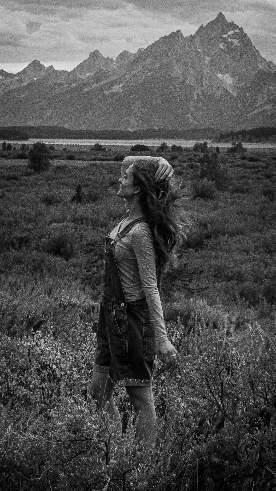

Interactive camera simulator
Exposure
Lab.
Shape one original photograph with the three settings every photographer balances: aperture, shutter speed, and ISO.
iMove one slider at a time. Watch the portrait, exposure meter, and four live readouts to see what that choice changes.
Wide · softer backgroundNarrow · more in focus
Slow · more motionFast · freezes motion
Clean · less sensitivityBright · more grain
Try a starting point
What am I looking for?
Aperture changes depth of field, shutter speed changes motion, and ISO trades a brighter image for more visible grain. The exposure meter shows how those choices combine.

Ryan White · Original photographEV ±0.0
BalancedExposure
ModerateDepth of field
NaturalMotion
LowImage noise
−3
+3
This combination balances exposure, depth, motion, and image quality.